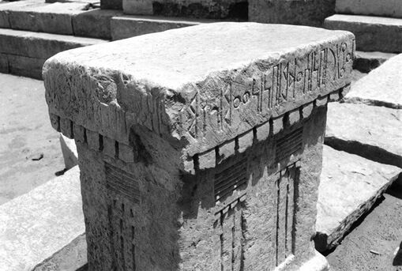

Why do the guilty and the wicked take “the truth to be hard”? (16:1–3) “The scriptures testify that the proud are easily offended and hold grudges (see 1 Ne. 16:1–3). They withhold forgiveness to keep another in their debt and to justify their injured feelings. The proud do not receive counsel or correction easily (see Prov. 15:10; Amos 5:10). Defensiveness is used by them to justify and rationalize their frailties and failures (see Matt. 3:9; John 6:30–59)” (Benson, “Beware of Pride,” 6).
Why did Nephi correct and exhort his brothers? (16:4) “Nephi declared truth to his disobedient brothers in an effort to help them turn their hearts to God. Those who offend the Spirit through wickedness often take offense when given inspired correction or chastisement. Elder Neal A. Maxwell . . . explained why we should accept the Lord’s correction even if it is painful: ‘God is not only there in the mildest expressions of His presence, but also in those seemingly harsh expressions. For example, when truth “cutteth . . . to the very center” (1 Nephi 16:2), this may signal that spiritual surgery is underway, painfully severing pride from the soul’” (Book of Mormon Student Manual [2009], 34).
“Chastisement may occur in the most private circumstances of life or quite publicly. Either way, it is usually a major challenge for our egos. To be dressed down, as it were, just when we are dressed up, appearing to be something other than we are, is no small blow. Do we really love light enough ‘to be made glad’—even when we are shown to be wrong, when we thought ‘others were wrong’? Can we still take reproof when what others say is essentially correct but is said poorly and insensitively—or even with the wrong motives on their part? Are we willing to be held back a grade in the school of life while our contemporaries move on—until we get a certain lesson through our heads? Our Headmaster will not hesitate to do that, if necessary” (Maxwell, We Will Prove Them Herewith, 118).
How do you take correction from others? (16:4) In what ways can you improve when others offer to help you improve?
Why does Nephi mention his father’s tent and the valley of Lemuel? (16:6) After leaving their home in Jerusalem, Lehi’s family lived in the valley of Lemuel (see 1 Nephi 2:10). The reader is now alerted that several years have passed. “After an extended narrative consisting of his father’s dream, his own vision, and his exposition to his brothers . . . Nephi must now return to his family’s mundane travel narrative. As a transitional device, he repeats the marker he has used earlier: these things were done ‘as my father dwelt in a tent in the valley which he called Lemuel’” (Gardner, Second Witness, 1:269).
Hugh Nibley observed: “It is most significant how Nephi speaks of his father’s tent; it is the official center of all administration and authority. First the dogged insistence of Nephi on telling us again and again that ‘my father dwelt in a tent’ (1 Nephi 2:15; 9:1; 10:16; 16:6). So what? we ask, but to an Oriental that statement says everything. Since time immemorial the whole population of the Near East have been either tent-dwellers or house-dwellers, the people of the bait ash-sha’r or the bait at-tin, ‘houses of hair or houses of clay.’ It was Harmer who first pointed out that one and the same person may well alternate between the one way of life and the other, and he cites the case of Laban in Genesis 31, where ‘one is surprised to find both parties so suddenly equipped with tents for their accommodation in traveling,’ though they had all along been living in houses. Not only has it been the custom for herdsmen and traders to spend part of the year in tents and part in houses, but ‘persons of distinction’ in the East have always enjoyed spending part of the year in tents for the pure pleasure of a complete change” (Approach to the Book of Mormon, 243).
Why was it so important to return to Jerusalem for Ishmael’s daughters? (16:7) Lehi realized, like all biblical patriarchs, that marriage is central to the plan of God. Nephi records that all eligible sons and daughters were given in marriage. “After reading about the marriages between Lehi’s and Ishmael’s families, we are told that Lehi had fulfilled all the commandments the Lord had given him (see 1 Nephi 16:8). Marriage is central to the Lord’s plans for His children. The First Presidency and the Quorum of the Twelve Apostles declared the Lord’s view on marriage: ‘The family is ordained of God. Marriage between man and woman is essential to His eternal plan’ (‘The Family: A Proclamation to the World,’ 102)” (Book of Mormon Student Manual [2009], 34).
Camille Fronk observed: “The text is silent as to why Ishmael’s daughters were selected to be wives for Lehi and Sariah’s sons. Tradition among desert peoples was for a woman to marry her paternal uncle’s son. Consequently, there may have been some familial connection between Ishmael (or his wife) and either Lehi or Sariah. Elder Erastus Snow purported learning from Joseph Smith that Lehi’s daughters had married into Ishmael’s family already, connecting the two families before they ever left Jerusalem. Furthermore, the fortuitous fact that a precise number of eligible men were available to marry Ishmael’s five single daughters may have figured prominently in Ishmael’s decision to join Lehi’s family in the wilderness” (Fronk, “Desert Epiphany,” 4–15).
Why does Nephi say he was exceedingly blessed? (16:8) “This verse leaves the impression that Lehi had been commanded of the Lord to see that his sons were properly married. The antecedent of Nephi’s expression that he had been ‘blessed of the Lord exceedingly’ seems to have been his marriage. If this is the case, it is a touching tribute to his wife, who, according to Hebrew tradition, remains unnamed” (McConkie and Millet, Doctrinal Commentary, 1:123–24).
What are some of the characteristics to remember about the Liahona? (16:10) “First, the Liahona was a gift from God. . . . Second, it was neither mechanical nor self-operating. It was not a mechanism but worked solely by the power of God and solely according to their faith. It wasn’t magic; a magic thing would work by itself. Third, it only worked in response to faith, diligence, and the heed of those who followed it. Fourth, there was something ordinary and familiar about it” (Nibley, Teachings of the Book of Mormon, 1:4–5).
Hugh Nibley adds this about the Liahona: “It was called ‘the small means by which God worked.’ It was not a mysterious, untouchable object. They called it ‘but a temporal thing.’ It was so ordinary that there was a constant tendency of Lehi’s family simply to ignore it. They wouldn’t pay attention to it, whether it worked or not. According to Alma, their needless, years-long wanderings in the desert were because of the fact that they ignored it most of the time. Fifth, the working parts of the device were two spindles or pointers in a globe. On these, special writings would appear from time to time clarifying and amplifying the message of the pointers. (Remember, Lehi was terrified when he saw the writing on them that told him about these things.) The specific purpose of the traversing indicators was to point the way they should go. The pointers were mounted in a brass sphere whose marvelous workmanship excited their wonder and admiration because instructions sometimes appeared on this ball too. The device was referred to descriptively as ‘a ball’ functioning as an indicator, and in both senses it is called ‘a compass.’ On occasion, it saved Lehi’s people from perishing by land and sea. We are told, ‘If they would but look on it, they might live.’ And it was preserved for a wise purpose long after it had ceased to function; it was a museum piece. It had been prepared specifically to guide Lehi’s party to the Promised Land. It was a ‘type and a shadow,’ he tells us, of man’s relationship to God during this earthly passage” (Nibley, Teachings of the Book of Mormon, 1:4–7).
What does the word Shazer mean? (16:13) Hugh Nibley taught: “‘And we did call the name of the place Shazer.’ . . . Shajar is a clump of trees; it’s pronounced shazer, of course. It’s a group of trees in the desert. Well, naturally, the place they would park next would be where there were some trees, some water, etc. So they camped in a place called Shazer, ‘the trees’” (Teachings of the Book of Mormon, 1:7–8).
What can we learn from how the Liahona operated? (16:16) “As we study and ponder the purposes of the Liahona and the principles by which it operated, I testify that we will receive inspiration suited to our individual and family circumstances and needs. We can and will be blessed with ongoing direction from the Holy Ghost” (Bednar, “That We May Always Have His Spirit,” 30).
“The Liahona was prepared by the Lord and given to Lehi and his family after they left Jerusalem and were traveling in the wilderness (see Alma 37:38; D&C 17:1). This compass or director pointed the way that Lehi and his caravan should go (see 1 Nephi 16:10), even ‘a straight course to the promised land’ (Alma 37:44). The pointers in the Liahona operated ‘according to the faith and diligence and heed’ (1 Nephi 16:28) of the travelers and failed to work when family members were contentious, rude, slothful, or forgetful (see 1 Nephi 18:12, 21; Alma 37:41, 43).
“The compass also provided a means whereby Lehi and his family could obtain greater ‘understanding concerning the ways of the Lord’ (1 Nephi 16:29). Thus, the primary purposes of the Liahona were to provide both direction and instruction during a long and demanding journey. The director was a physical instrument that served as an outward indicator of their inner spiritual standing before God. It worked according to the principles of faith and diligence.
“Just as Lehi was blessed in ancient times, each of us in this day has been given a spiritual compass that can direct and instruct us during our mortal journey. The Holy Ghost was conferred upon you and me as we came out of the world and into the Savior’s Church through baptism and confirmation” (Bednar, “That We May Always Have His Spirit,” 30–31).
What was the significance of the bow in the culture of Lehi’s family? (16:18) “Bows were symbols of political power. One thinks of Odysseus bending the bow to prove himself. An overlord would break the bow of a disobedient vassal to symbolically put the rebel in his place (see also Jeremiah 49:35; 51:56). That detail is significant in 1 Nephi 16. Nephi’s bow broke, and the bows of Laman and Lemuel lost their springs, but when Nephi fashioned a new bow, making him the only one in camp with a bow, his brothers soon accused Nephi of having political ambitions (see 1 Nephi 16:37–38)” (Hamblin, “Nephi’s Bows and Arrows,” 41).
In addition to the cultural and political implications of the bow, the details of this incident provide insight into the prophetic origin of the record. Critics of the Book of Mormon often overlook details that provide evidence of the truthfulness of the Book of Mormon, such as the highly unlikely ability of Joseph Smith to understand the details of archery. “An examination of Nephi’s account shows that whoever wrote that account was familiar in some detail with the field of archery. Consider what happens to an arrow at the instant the string is released: the full force of the drawn string is applied to the end of the arrow, trying to accelerate it, but also tending to bend or buckle the arrow. If the bow’s draw weight and the arrow’s stiffness are not perfectly matched, the arrow will stray off the intended course or fall short of the mark. An arrow that is too flexible will leave the bow with a vibration that can cause the arrow to behave erratically. On the other hand, an arrow that is too stiff is probably too heavy for the bow.
“Nephi’s steel bow likely used heavier, stiffer arrows than his simply fashioned wooden bow could handle. Nephi was physically large (see 1 Nephi 2:16; 4:31), and he would have had little reason to use a bow made from metal if he did not have considerable strength. The arrows to match the steel bow used by such a man would undoubtedly have been quite heavy in order for them to be of adequate stiffness. One experienced archer reports, ‘The arrows from the steel bow when shot from the wooden bow would be like shooting telephone poles.’ Hence, it is accurate that Nephi should mention, in one and the same breath, the fact that he made an arrow as well as a bow. Bow wood and arrow wood from the same tree or area could be matched as well.
“One doubts that such information was known to Joseph Smith or to many, if any, of his contemporaries. Archery, as a means of self-defense or as a serious method of hunting or warfare, went out of vogue among Europeans many years before the time of Joseph Smith. On the other hand, archery as a sport did not emerge until the latter half of the nineteenth century. . . . Nephi’s statement that he made an arrow out of a straight stick is an additional subtle but significant example of internal consistency within the Book of Mormon. Anyone unfamiliar with the field of archery would have almost certainly omitted such a statement. Another bull’s-eye for the Book of Mormon” (Hamblin, “Nephi’s Bows and Arrows,” 41–43).
Was it possible for Nephi to have a steel bow? (16:18) References to steel in the Book of Mormon include “references to metal weapons. . . . Two are references to Near East weapons: ‘the blade [of Laban’s sword] was of the most precious steel’ (1 Nephi 4:9), and Nephi’s bow was made of ‘fine steel’ (1 Nephi 16:18). The existence of steel (that is, carburized iron) weapons in the Near East in the early sixth century b.c. has been clearly demonstrated. Robert Maddin writes, ‘To sum up, by the beginning of the seventh century b.c. . . . blacksmiths of the eastern Mediterranean had mastered two of the processes that make iron a useful material for tools and weapons: carburizing and quenching’ [‘How the Iron Age Began,’ 131]” (Hamblin and Merrill, “Swords in the Book of Mormon,” 345–46).
Hugh Nibley added: “His bow was made of fine steel, and he said, ‘I did break my bow.’ In Palestine from time immemorial they only used composite bows. That’s why they considered it a miracle when Nephi made his bow. The composite bow has a handle of ivory or wood. . . . And the metal parts were of bronze which doesn’t spring like steel, but steel is the best. Just in recent years it has been discovered that steel is as early known as anything at all—for obvious reasons. Steel is a mixture of iron and carbon. If you are using coal or wood or anything else and you have to get an awfully high temperature, you are going to get carbon mixed in with it. It won’t make inferior iron; sometimes it will make good steel. But anyway, we know they had it. We have those pictures of King Tut’s beautiful steel dagger from seven hundred years before. But they had steel bows, and they only used composite bows, which were metal. . . . You could replace parts, etc. But he broke his steel bow, and that was bad. That meant that the family was going to starve because everybody depended on it.
“Now Saxton Pope in his classical work called Hunting with the Bow and Arrow says the average bow is worth a hundred thousand shots. After that it loses it spring and you can’t use it anymore. [Nephi], who seemed to be a very capable fellow, must have been using his bow for years. It says that their bows had lost their springs, and that would happen. Notice in verse 21:‘the loss of my bow, and their bows having lost their springs.’ As a result of this, they are very hungry. He returned without food and they suffered much. Now what happened? Now who is righteous? Who has a perfect faith? This is the nadir in their travels, you see. Verse 20: ’And also my father began to murmur against the Lord his God [Lehi himself]; yea, and they were all exceedingly sorrowful, even that they did murmur against the Lord.’ They were all murmuring against the Lord—not just Laman and Lemuel, but Lehi himself. We’ve got to watch these things. Verse 23: ’And it came to pass that I, Nephi, did make out of wood a bow, and out of a straight stick, an arrow; wherefore, I did arm myself with a bow and an arrow.’ Then he asked the Liahona where he should go to find game, and he found it in the right place” (Nibley, Teachings of the Book of Mormon, 1:217–18).
Why did Laman and Lemuel “murmur exceedingly”? (16:20–22) “Easily riled and quick to complain, they could scarcely remember their last rescue long enough to meet their next difficulty. Instead, lacking gospel perspective, the situational cares of the day, like worry over a broken bow, of all things, dominated the things of eternity” (Maxwell, “Lessons from Laman and Lemuel,” 8).
H. Ross Workman added: “The Savior taught a parable to warn us of the treacherous path to disobedience through ‘murmuring.’ In the parable, we learn of a nobleman who had a choice spot of land. He told his servants to plant 12 olive trees and build a tower overlooking the olive grove. The purpose for the tower was to permit a watchman perched upon the tower to warn of the coming of the enemy. Thus, the olive grove could be protected.
“The servants did not build the tower. The enemy came and broke down the olive trees. The disobedience of the servants left a catastrophe in the olive grove (see D&C 101:43–62).
“Why did the servants fail to build the tower? The seeds of the disaster were planted by murmuring.
“According to the Lord’s parable, murmuring consists of three steps, each leading to the next in a descending path to disobedience.
“First, the servants began to question. They felt to exercise their own judgment upon the instruction given by their master. ‘What need hath my lord of this tower, seeing this is a time of peace?’ they said (D&C 101:48). They questioned first in their own minds and then planted questions in the minds of others. Questioning came first.
“Second, they began to rationalize and excuse themselves from doing what they had been instructed to do. They said: ‘Might not this money be given to the exchangers? For there is no need of these things’ (D&C 101:49). Thus, they made an excuse for disobedience.
“The third step inevitably follows: slothfulness in following the commandment of the Master. The parable says, ‘They became very slothful, and they hearkened not unto the commandments of their lord’ (D&C 101:50). Thus, the stage was set for disaster” (Workman, “Beware of Murmuring,” 85).
How do you react when others murmur or complain? (16:22) Can you remember times when you heard others, including loved ones, complain about their situation in life? How do you generally respond? Do you seek to help them turn to the Lord, as Nephi did?
Why did Nephi still follow Lehi even though he had murmured? (16:23) Elder Marion D. Hanks emphasized Nephi’s great character as a faithful son in how he approached this crisis: “What to do? . . . Nephi went to his father and said, ‘Dad, the Lord has blessed you. You are his servant. I need to know where to go to get food. Dad, you ask him, will you?’ Oh, he could have gone to his own knees. He could have taken over. I count this one of the really significant lessons of life in the book . . . a son who had strength enough . . . [to] say, ‘You ask God, will you?’ because somehow he knew this is how you make men strong” (“Steps to Learning,” 7).
Fathers don’t need to be perfect to lead their family and bless them. President Ezra Taft Benson related the following account:
“Some time ago, a young man came to my office requesting a blessing. He was about eighteen years of age and had some problems. There were no serious moral problems, but he was mixed up in his thinking and worried. He requested a blessing.
“I said to him, ‘Have you ever asked your father to give you a blessing? Your father is a member of the Church, I assume?’
“He said, ‘Yes, he is an elder, a rather inactive elder.’
“When I asked, ‘Do you love your father?’ he replied, ‘Yes, Brother Benson, he is a good man. I love him.’ He then said, ‘He doesn’t attend to his priesthood duties as he should. He doesn’t go to church regularly, I don’t know that he is a tithe payer, but he is a good man, a good provider, a kind man.’
“I said, ‘How would you like to talk to him at an opportune time and ask him if he would be willing to give you a father’s blessing?’
“’Oh,’ he said, ‘I think that would frighten him.’
“I then said, ‘Are you willing to try it? I will be praying for you.’
“He said, ‘All right; on that basis, I will.’
“A few days later he came back. He said, ‘Brother Benson, that’s the sweetest thing that has happened in our family.’ He could hardly control his feelings as he told me what had happened. He said, ‘When the opportunity was right, I mentioned it to Father, and he replied, ‘Son, do you really want me to give you a blessing?’ I told him, ‘Yes, Dad, I would like you to.’ Then he said, ‘Brother Benson, he gave me one of the most beautiful blessings you could ever ask for. Mother sat there crying all during the blessing. When he got through there was a bond of appreciation and gratitude and love between us that we have never had in our home’” (“Message to the Rising Generation,” 31–32).
How did the Liahona work? (16:28–29) While he was counseling his son Helaman, Alma said: “And it did work for them according to their faith in God; therefore, if they had faith to believe that God could cause that those spindles should point the way they should go, behold, it was done” (Alma 37:40). If, on the other hand, “they were slothful, and forgot to exercise their faith and diligence then those marvelous works ceased, and they did not progress in their journey; therefore, they tarried in the wilderness, or did not travel a direct course, and were afflicted with hunger and thirst, because of their transgressions” (Alma 37:41–42; see also Alma 37:38–47).
Elder Robert E. Wells, an emeritus member of the First Quorum of the Seventy, had a dream that led him to write about what he called “The Liahona Triad: faith, diligence, and heed”: “Some time ago I had a dream on a spiritual subject. It was an allegory centered on the Book of Mormon. I have never referred to it before, but when I was invited to write about some facet of the Book of Mormon, my thoughts turned to that most unusual dream, and I felt that it might have been given to me for this purpose.
“In the dream I saw multitudes milling around aimlessly. A few people were being propelled toward a beautiful goal in the distance. The force moving them was both constant and invisible, but only a few moved directly and quickly toward the goal. Most wavered, slowed down, wandered around, or became totally disoriented, and although the force that was there to propel them was steady and constant, most people were not able to take advantage of it. I asked, ‘Why don’t they all use the force the same way? What is happening? What does this all mean?’ The answer came from a personage whose presence I sensed but did not see. He said, ‘The ability to take advantage of the power attracting people to Jesus Christ, the desirable goal, depends entirely upon each person’s faith, diligence, and heed.’
“I awoke suddenly, knowing exactly where that phrase came from—the Liahona story. I have not recounted the details of the dream, only the overall impression, because the experience was quite long.
“Since the allegorical dream occurred, I have stayed alert for additional information about the tradition of the Liahona. I will call my remarks ‘The Liahona Triad.’ A triad is a group of three closely associated items or concepts. Musicians know that the word triad can also mean a chord of three tones: a root tone played with its third tone and fifth tone, constituting the harmonic basis of tonal music. I believe that there is a kind of celestial music that comes from the Book of Mormon and from the three closely associated qualities of faith, diligence, and heed—a celestial music that lifts the soul” (“Liahona Triad,” 80–96).
What does Nahom mean? (16:34) “There are two Semitic language roots suggested by the Book of Mormon Nahom: nhm . . . in Arabic as nahama, ‘sigh, groan, moan, especially with another.’ In Hebrew, the root nhm is often used for ‘mourning’ someone else’s death or ’consoling’ the bereaved” (Aston and Aston, “Lehi’s Trail and Nahom Revisited,” 48).
Where is Nahom? (16:34) There is ample physical evidence documenting the location of both ancient and modern Nahom. The place Nahom was a burial site prior to Lehi’s leaving Jerusalem, and it still exists today. “‘Nahom’ was already the name of the area where his father-in-law, Ishmael, was buried. . . . It was natural and appropriate to mention the tribal place-name in recording and recalling the death and burial that took place there. At just the right location to link directionally to and access the place that they would call ‘Bountiful,’ the rare name NHM still exists today and is now firmly documented back through the centuries to before Nephi’s day” (Aston, “History of NaHoM,” 94).
© Warren Aston. Used by permission.
This altar is located at the place some have identified as the site of ancient Nahom, where Ishmael was buried (see 1 Nephi 16:34).
“Two underlying points should be noted regarding Nephi’s statement in 1 Nephi 16:34, that Ishmael ‘was buried in the place which was called Nahom’ (italics added). This wording makes it quite clear that Nahom was already known by that name. Lehi and his party saw no need to name or rename the place, as they regularly did on their desert odyssey, both before and after Ishmael’s death (see ‘in the valley which he called Lemuel,’ 1 Nephi 16:6; ‘we did call the name of the place Shazer,’ 16:13; ‘the sea, which we called Irreantum,’ 17:5; ‘we called the place Bountiful,’ 17:6; ‘we did call it the promised land,’ 18:23). Although the meaning of the name ‘Nahom’ is not exactly clear, it may well have captured in Arabic or Hebrew the human aspects of sighing, moaning, sorrowing, or mourning, as well as the ideas of comforting or consoling, any or all of which meanings would have made Nephi’s mention of this name appropriately significant, given the fact that it was a place suitable for burial.
“Second, Nihm, which is the name of both a tribe and the territory it occupies, may well have shared the same consonants, N H M, as the Book of Mormon name Nahom. This would hold true in any of the Semitic languages, whether in today’s Arabic or the ancient Epigraphic or Early South Arabian language of the altar inscriptions, depending on which Hebrew or Egyptian H Nephi used in this word on his small plates.
“In other languages, including English, the name is transliterated with vowels added. This results in variants such as Nehem, Nihm, Nahm and Nehm, but the consonants—and therefore the essential name—remain the same. While many toponyms, or place-names, appear repeatedly in Arabia, NHM is unique, always with ‘a voiceless laryngeal,’ a simple h. As a toponym, NHM has not been found to appear anywhere else except in reference to one area. . . .
“Documenting a tribal name and location back some three thousand years is, of course, rare anywhere in the world; it is likely unprecedented in Arabian archaeology. It is noteworthy that, without exception, each of these maps and texts portray Nihm in its present location, although many scholars assume that the tribal influence was wider in the pre-Islamic period. Together, these sources form a consistent, amply documented tribal chronology, allowing reasonable conjecture that the origin of this name may reach back at least into late Neolithic times and would have been known to many ancient people familiar with that region.
“Thus, it is significant that Nephi’s account makes clear that ‘Nahom’ was already the name of the area where his father-in-law, Ishmael, was buried. To this Hebrew-speaking group, it was natural and appropriate to mention the tribal place-name in recording and recalling the death and burial that took place there. At just the right location to link directionally to and access the place that they would call ‘Bountiful,’ the rare name of NHM still exists today and is now firmly documented back through the centuries to before Nephi’s day” (Aston, “History of NaHoM,” 79–94).
